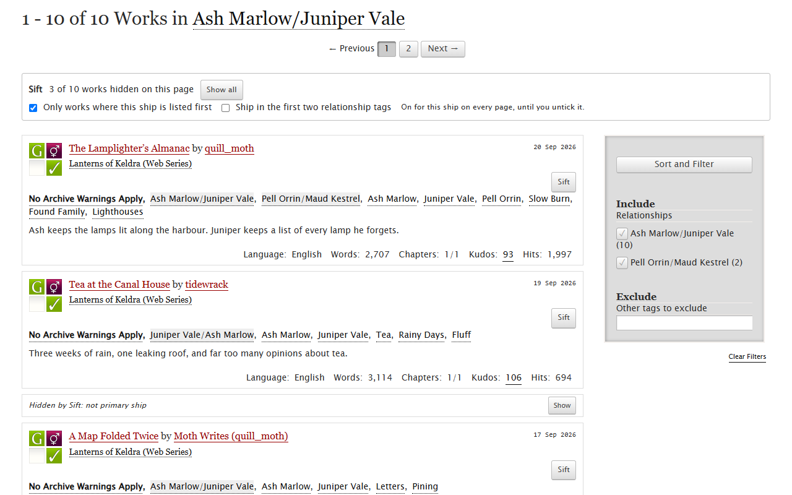
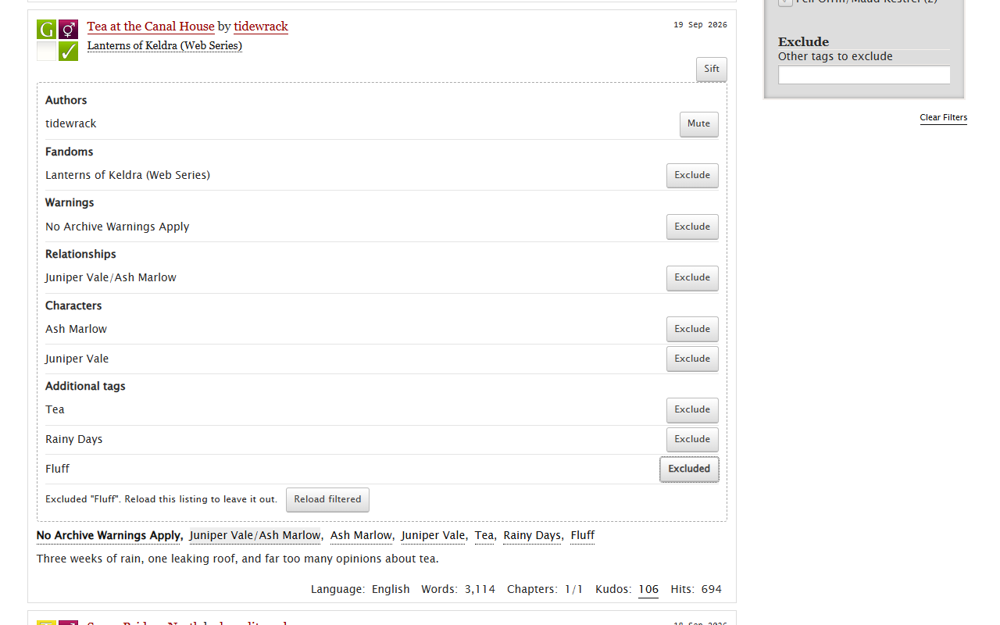

Sift for AO3
A browser extension for reading on Archive of Our Own. It keeps your excluded tags on for every listing and search, mutes authors even when you're logged out, and on a ship's works page it can fold away the fics where that ship is only a side pairing.

Your ship first
On a relationship tag's works page, tick "Only works where this ship is listed first". Works where the ship is a background pairing shrink to one line with a Show button. Sift reads AO3's own list of other names for the ship, so a reversed pairing still counts. There's a looser "first two relationship tags" option too.
Excluded tags that stay excluded
AO3's filter sidebar forgets your excluded tags when you open another tag or search. Exclude a tag once, from any work's Sift panel or the options page, and every AO3 listing you open from then on leaves it out. Sift adds the tag to AO3's own filter, so synonym tags are excluded too and pages stay full.
AO3's other sidebar filters can stick too: pick complete works only, a language, no crossovers or a word count range once, press "Keep on every listing" in the Sift bar, and every work listing and search uses them from then on.

Muted authors
Mute an author and their works fold away on every listing, under every pseud, without an AO3 account.
Install
The Chrome Web Store and Firefox Add-ons listings are in review. Until they're up,
download sift-ao3-1.0.0-chrome.zip from the
latest release, unzip
it, open chrome://extensions, turn on Developer mode and choose "Load
unpacked".
Privacy
Your lists are saved only in your browser and never sent to me. Sift has no account, no server and no analytics. It talks to one website, AO3. Details are in the privacy policy.